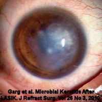

Инфекция после операции LASIK

Инфекция является серьезным потенциальным осложнением операции LASIK. Источниками инфекционного заражения во время операции LASIK являются глазная флора, любые инструменты или губки, используемые во время операции, руки хирурга и переносимые по воздуху загрязнения. Пациенты с инфекцией после операции LASIK, как правило, испытывают потерю зрения и боль. Инфекция может прогрессировать до расплавления лоскута (некроза), что требует ампутации лоскута. Тяжелые случаи инфекции после операции LASIK могут привести к внутриглазной инфекции, известной как эндофтальмит. Плотные рубцы, как показано на рисунке, приводят к серьезным нарушениям зрения или слепоте. Инфекция после операции LASIK может потребовать трансплантация роговицы .
Потому что лоскут Lasik никогда не заживает Пациенты с LASIK на протяжении всей жизни имеют повышенный риск развития глазных инфекций:
"Возможное объяснение появления отсроченного кератита после операции LASIK заключается в том, что создание пластинчатого лоскута может привести к образованию постоянного портала на периферии роговицы для проникновения микроорганизмов".(Виейра и др., 2008)
"Инфекционный кератит, который встречается примерно у 1 из 500 пациентов, перенесших фоторефракционную кератэктомию (ФРК), и у 1 из 2000 пациентов, перенесших операцию LASIK, может привести к необратимой потере зрения".; Источник
Проблемы, связанные с Lasik? Отправьте отчет о медицинском наблюдении с Управлением по санитарному надзору за качеством пищевых продуктов и медикаментов в режиме онлайн. Кроме того, вы можете позвонить в Управление по санитарному надзору за качеством пищевых продуктов и медикаментов по телефону 1-800-FDA-1088, чтобы сообщить об этом по телефону. бумажный бланк и либо отправьте его по факсу на номер 1-800-FDA-0178, либо отправьте по почте на адрес, указанный внизу страницы 3, либо загрузите Мобильное приложение MedWatcher для сообщения о проблемах с LASIK в FDA с помощью смартфона или планшета. Ознакомьтесь с образцом Отчеты о травмах, полученных с помощью LASIK в настоящее время находится на рассмотрении в FDA.
Пациенты с осложнениями LASIK приглашаются на присоединяйтесь к обсуждению на FaceBook
Инфекция Mycobacterium chelonae после операции LASIK, в настоящее время слепая
37-летняя женщина перенесла операцию LASIK в июле 2017 года после того, как ее ввели в заблуждение, что операция безопасна. У нее сразу же возникли проблемы с одним глазом. Хирург перепробовал различные методы лечения, но состояние ее глаза продолжало ухудшаться. Несколько месяцев спустя она обратилась за консультацией к другому офтальмологу, который диагностировал у нее инфекцию, вызванную mycobacterium chelonae. Из-за того, что инфекция бушевала так долго, ее роговица была разрушена. Теперь она слепа на этот глаз и испытывает постоянную боль. Ее единственная надежда на восстановление зрения - найти врача, который сможет взять инфекцию под контроль, а затем сделать пересадку роговицы. Последствия этой ситуации для ее жизни огромны. Она чувствует, что больше не в состоянии полноценно заботиться о своих троих детях. Стресс и депрессия привели к другим проблемам со здоровьем, и она замкнулась в себе. Она делится своей историей в надежде, что это может спасти кого-то еще от того, чтобы стать жертвой.
.jpg)
Рабина и др. Язва на краю роговицы с очень поздним развитием после лазерного кератомилеза in situ. Международный офтальмологический журнал. 13 апреля 2019. doi: 10.1007/s10792-019-01100-0.
цель:
Сообщить и охарактеризовать случаи очень позднего возникновения (через 5 лет и более после операции) язв роговицы с краевыми лоскутами после процедуры лазерного кератомилеза in situ (LASIK).
методы:
Ретроспективная серия наблюдений пациентов, у которых после операции LASIK были диагностированы язвы роговицы с очень поздними краями лоскута, в период с января 2014 по июль 2017 года. Все пациенты получали антибиотики местного действия и находились под наблюдением до полного излечения.
результаты:
В это исследование были включены в общей сложности восемь пациентов со средним возрастом от 46,5 до 11 лет (диапазон от 31 до 64 лет). Всем пациентам была проведена миопическая операция LASIK без осложнений за 13,3 и более месяцев до ее начала (в диапазоне 10-20 лет). Наилучшая скорректированная острота зрения пациентов (BCVA) при предъявлении составила 0,20 ±0,15 логарифма по сравнению с окончательным значением BCVA, равным 0,10 ± 0,10 логарифма (p=0,28). Язва располагалась в двух нижних часах от края лоскута (5-7 часов) у шести (75%) пациентов и выше (11 часов) у оставшихся двух пациентов (р=0,048). Семь пациентов (87,5%) страдали блефаритом, и только у одного его не было.
выводы:
Операция LASIK может быть связана с повышенным риском развития язвы роговицы на поздних сроках, которая может развиться спустя годы после процедуры. Нестабильность края лоскута, блефарит и сухость глаз являются возможными причинами нарушения эпителия и могут быть причиной этого осложнения.
Синегнойный кератит через 4 года после лазерного кератомилеза in situ.
Феррер К., Родригес-Пратс Д.Л., Абад Д.Л., Кларамонте П., Алиа3 Д.Л., Сигнес-Солер И.
Optom Vis Sci. Октябрь 2011;88(10):1252-4.
ЦЕЛЬ: Сообщить о пациенте, который предъявил инфекционный кератит через 4 года после лазерного кератомилеза in situ (LASIK) без каких-либо других предрасполагающих факторов риска, кроме самой процедуры LASIK .
Мы сообщаем о 32-летнем мужчине, прооперированном с помощью LASIK в январе 2006 года, у которого в апреле 2010 года развился инфекционный кератит в области передозировки. Клиническое обследование выявило абсцесс роговицы в положении "10 часов" на границе раздела, а также фибрин и Тиндалл 4+ в передней камере. Микробиологический анализ выявил синегнойную палочку как причину инфекции. Пациентке вводили офлоксацин, сульфат неомицина, полимиксин В и преднизолона ацетат каждые 2 часа. Лечение привело к клиническому улучшению и рассасыванию инфильтрата роговицы. Кератит с неповрежденным эпителием, вызванный синегнойной палочкой, может возникать в течение 4 лет после операции LASIK.
ВЫВОДЫ: Лечение методом LASIK является фактором, предрасполагающим к развитию бактериального кератита даже спустя годы после операции. Этот отчет демонстрирует важность постоянной бдительности пациента и его лечащего врача в послеоперационном периоде.
Поздняя язва роговицы, вызванная клебсиеллой окситока, связанная с закрытием края лоскута, после лазерного кератомилеза in situ.
J Рефракционная хирургия катаракты, август 2011;37(8):1551-4.
Юнг С.Н., Лихтингер А., Ким П., Амиран М.Д., Сломович А.Р.
Через 11 лет после первоначальной процедуры лазерного кератомилеза in situ (LASIK) у 45-летней женщины развилась спонтанная язва роговицы, связанная с закрытием края лоскута . Было проведено два исследования, последнее из которых проводилось за 3 года до постановки диагноза. Посевы были положительными на интенсивный рост Klebsiella oxytoca. Язва дала клинический ответ на местное лечение витаминизированным цефазолином. Через восемнадцать дней после операции инфильтрат рассосался, и роговица полностью эпителизировалась. Насколько нам известно, это первое сообщение об инфекционном кератите после операции LASIK, вызванном K oxytoca.
Синегнойный Кератит через 4 Года после Лазерного Кератомилеза in Situ.
Optom Vis Sci. 2011, 9 июня. [Публикация в формате Epub предваряет печать]
Феррер К., Родригес-Пратс Д.Л., Абад Д.Л., Кларамонте П., Алиа3 Д.Л., Сигнес-Солер И.
ЦЕЛЬ: Представить отчет о пациенте, у которого через 4 года после лазерного кератомилеза in situ (LASIK) развился инфекционный кератит без каких-либо других предрасполагающих факторов риска, кроме самой процедуры LASIK.
Мы сообщаем о 32-летнем мужчине, прооперированном с помощью LASIK в январе 2006 года, у которого в апреле 2010 года развился инфекционный кератит в области передозировки. Клиническое обследование выявило абсцесс роговицы в положении "10 часов" на границе раздела, а также фибрин и Тиндалл 4+ в передней камере. Микробиологический анализ выявил синегнойную палочку как причину инфекции. Пациентке вводили офлоксацин, сульфат неомицина, полимиксин В и преднизолона ацетат каждые 2 часа. Лечение привело к клиническому улучшению и рассасыванию инфильтрата роговицы. Кератит с неповрежденным эпителием, вызванный синегнойной палочкой, может возникать в течение 4 лет после операции LASIK.
ВЫВОДЫ: Лечение методом LASIK является фактором, предрасполагающим к развитию бактериального кератита даже спустя годы после операции. Этот отчет демонстрирует важность постоянной бдительности пациента и его лечащего врача в послеоперационном периоде.
Редкое тяжелое осложнение LASIK: двусторонний грибковый кератит.
J Ophthalmol. 2010;2010:450230. Опубликовано 11 ноября 2010.
Тайлан Секероглу Х, Эрдем Э, Яр К, Яхмур М, Эрсоз ТР, Угуз А.
Отделение офтальмологии Университета Чукурова, Юрегир, 01330 Адана, Турция.
Абстрактный
Цель. Хочу сообщить о необычном случае тяжелого двустороннего грибкового кератита после лазерного кератомилеза in situ (LASIK).
Метод. У 48-летнего мужчины через две недели после операции LASIK развилась двусторонняя диффузная инфильтрация роговицы. В соскобах с роговицы были обнаружены грибковые нити, но результаты посева были отрицательными.
Результаты. Изъязвление роговицы на левом глазу уменьшилось, в то время как на правом глазу произошла спонтанная перфорация, и, в конечном итоге, потребовалось удаление, несмотря на местное и системное противогрибковое лечение.
Выводы. Грибковый кератит, особенно с двусторонним поражением, является очень редким и серьезным осложнением операции LASIK. Клиническое подозрение имеет решающее значение, поскольку в большинстве случаев грибковый кератит ошибочно диагностируется как бактериальный кератит и может привести к серьезным визуальным последствиям, вплоть до потери зрения.
Инфекционный кератит после операции LASIK - Обновление и обзор литературы.
Клин, Август 2010, 24 ноября 2010 года. [Опубликовано в формате Epub]
Линке С. Дж., Ричард Г., Кац Т.
Университетская клиника Эппендорфа (Великобритания), клиника и поликлиника в Аугенхайлькунде.
Абстрактный
Лазерная коррекция стала предпочтительной хирургической процедурой для коррекции аномалий рефракции. Микробный кератит является редким, но тяжелым осложнением. Частоту возникновения кератита после лазерной коррекции (одно- и двустороннего) оценить сложно. Риск двустороннего инфицирования до сих пор можно было приблизительно оценить, рассчитав его исходя из риска одностороннего инфицирования. К счастью, из-за низкой заболеваемости кератитом после операции LASIK необходимы масштабные исследования для получения достоверных статистических данных. Американское общество катарактальной и рефракционной хирургии (ASCRS) в 2001 году разработало обзор случаев инфекционного кератита после операции LASIK. Члены общества сообщили о 116 случаях инфекционного кератита после операции LASIK. Рассчитанная частота составила 0,035 %, или 1 инфекция на каждые 2919 процедур. Лловет и др. выявлено 9 пациентов (18 глаз) с двусторонним кератитом после LASIK из 204 586 процедур (частота 0,0084 %). Грамположительные бактерии и атипичные микобактерии являются наиболее распространенными причинами микробного кератита после LASIK. В литературе появляется все больше сообщений о случаях кератита после LASIK, вызванного редкими или нетипичными видами. Тяжелые случаи кератита чаще всего связаны с длительным началом инфекции и вызваны атипичными видами. Представлен обзор современной литературы и наши собственные данные о кератите после операции LASIK (одно- и двустороннем).
Микробный кератит после операции LASIK
Журнал рефракционной хирургии, том 26, № 3, март 2010
Прашант Гарг, доктор медицинских наук; Сунита Чаурасиа, доктор медицинских наук; Правин К. Ваддавалли, доктор медицинских наук; Муралидхар Р., доктор медицинских наук; Викас Миттал, доктор медицинских наук, и Уша Гопинатан, доктор медицинских наук
Выдержки:
Инфекционный кератит после LASIK - это разрушительное осложнение, угрожающее зрению В офтальмологической литературе нередко можно встретить сообщения о кератите после операции LASIK.
Частота этого осложнения, по оценкам, составляет от 1 на 1000 до 1 на 5000 процедур. Однако в большинстве стран мира нет точных данных о частоте послеоперационных инфекций, вызванных методом LASIK. Таким образом, эти оценки могут представлять собой недооценку истинной заболеваемости, поскольку о многих случаях инфицирования часто не сообщается.
Хотя LASIK - это хирургическая процедура, включающая разрез, выполняемый через строму роговицы, она связана с различными стандартами хирургической асептики и послеоперационного ухода. Неоптимальные меры предосторожности в отношении стерильности, многократное использование лезвий микрокератома, минимальное послеоперационное наблюдение, включение пациентов из группы высокого риска и двусторонние одновременные процедуры могут потенциально подвергать пациентов повышенному риску инфицирования и других послеоперационных воспалительных осложнений.
Случай трудноизлечимого инфекционного кератита и последующего некроза лоскута после лазерного кератомилеза in situ.
Камия К., Касахара М., Симидзу К.
Клинический офтальмолог. 2009;3:523-5. Epub, 24 сентября 2009 года.
Мы сообщаем о пациенте, у которого трудноизлечимый инфекционный кератит и последующий пластинчатый некроз лоскута требующий ампутация лоскута после лазерного кератомилеза in situ (LASIK). 34-летняя женщина, проходившая процедуру LASIK, пожаловалась на ухудшение зрения и боль в левом глазу. Наилучшая острота зрения с поправкой на очки составила 0,01, и исследование с помощью щелевой лампы показало выраженное присутствие стромальных инфильтратов, затрагивающих лоскут и нижележащую строму в этом глазу. Пациенту проводилось местное лечение с ежечасной инстилляцией микрономицина, левофлоксацина и цефменоксима в сочетании с системным введением имипенема, но на левом глазу развился некроз роговичного лоскута. Мы провели хирургическую обработку пораженной стромы и удалили пластинчатый лоскут. Поскольку на хирургических инструментах были обнаружены нетуберкулезные микобактерии, мы добавили пероральный прием кларитромицина и заменили системное введение амикацина на системное введение имипенема. Через месяц после удаления лоскута острота зрения постепенно улучшилась до 0,7, но помутнение стромы центральной части роговицы и гиперметропический сдвиг на +3,0 диоптрии остались. LASIK может вызвать трудноизлечимый кератит, приводящий к значительным нарушениям зрения предположительно, это связано с недостаточной антисептикой медицинских инструментов, используемых для этой операции, что подтверждает важность строгой стерилизации этих инструментов.
Язва роговицы, вызванная лазерным кератомилезом in situ на поздней стадии - серия случаев.
Варссано Д., Вайсбурд М., Беркнер Л., Регенбоген М., Хазарбасанов Р., Михаэли А.
Роговица. Июнь 2009;28(5):586-8.
ЦЕЛЬ: Представить отчет о 4 случаях язвы роговицы, связанной с краем лоскута, которые развились через 5 лет после процедуры лазерного кератомилеза in situ (LASIK).
МЕТОДЫ: Мы ретроспективно задокументировали клинические и лабораторные характеристики всех пациентов в период с 2004 по 2008 год, у которых была выявлена связанная с LASIK язва роговицы, появившаяся более чем через 5 лет после операции. 4 пациента с таким заболеванием были мужчинами в возрасте 25, 33, 61 и 62 лет.
РЕЗУЛЬТАТЫ: У двух пациентов были получены культуры, положительные на золотистый стафилококк и эпидермальный стрептококк. Две язвы зажили после стандартной терапии антибиотиками местного действия, одна язва зажила после лечения моксифлоксацином, а четвертая - после лечения ломефлоксацином. Все случаи были представлены через 5 лет после процедуры LASIK.
выводы:: Процедуры LASIK могут быть связаны с риском инфицирования роговицы даже спустя годы. Причиной может быть нестабильность края лоскута, вызывающая нарушение защитного барьера эпителия.
Из полного текста:
Создание пластинчатого лоскута может привести к попаданию микроорганизмов на поверхность раздела стромы, которые вызовут инфекцию после того, как эпителий роговицы восстановит свою целостность. Мы считаем, что периоперационная вакцинация является вероятной причиной инфекций в раннем и промежуточном послеоперационном периоде, но она не может объяснить патогенез у наших пациентов, у которых инфекция возникла спустя годы. Эпителий роговицы почти всегда остается неповрежденным к 1 дню после процедуры LASIK. Однако строма никогда не восстанавливает свою прежнюю структуру Мы предполагаем, что микродвижения по краям раны могли привести к повторному повреждению эпителия, что сделало край лоскута местом проникновения микроорганизмов.Мы основываем нашу гипотезу на расположении язвы у края раны во всех 4 описанных нами случаях, отсутствии других предрасполагающих факторов к развитию язвы роговицы у 2 пациентов и длительном промежутке времени после операции...
Чтобы предотвратить поздние язвы роговицы, связанные с LASIK, мы рекомендуем избегать трения глаз, использования контактных линз и борьбы с блефаритом.
Заключить, LASIK может оказывать долгосрочное воздействие на роговицу, делая ее уязвимой к язвам роговицы, связанным с краями лоскута, вероятно, из-за механизма нестабильности краев лоскута. Возможно, было бы разумно продолжать длительное наблюдение за пациентами, проходящими процедуру, и уделять особое внимание желаемым профилактическим мерам.
Инфекции с поздним началом после LASIK
Журнал рефракционной хирургии, том 24, № 4, апрель 2008
Ана Каролина Виейра, доктор медицинских наук; Тельма Перейра, доктор медицинских наук; Дениз де Фрейтас, доктор медицинских наук
Из полного текста:
Возможное объяснение проявления замедленного кератита после операции LASIK считается, что создание пластинчатого лоскута может привести к постоянному образованию портала на периферии роговицы для проникновения микроорганизмов.
Небольшой разрыв эпителия, возникающий в любое время после операции LASIK, позволяет поверхностным микробам проникать через лоскут и достигать границы раздела.4 Пациентка в первом случае носила контактные линзы для коррекции аметропии. Сообщалось, что длительное ношение контактных линз может привести к нарушению эпителиального барьера9, что облегчает проникновение микроорганизмов. В случае 2 пациент получил травму футболкой, которая, возможно, сыграла роль в заражении грибком.
Пластинчатый интерфейс может функционировать как виртуальное пространство, в котором могут развиваться изолированные инфекции.
Этот отчет демонстрирует риск развития микробного кератита спустя годы после операции LASIK и подчеркивает важность пожизненная послеоперационная бдительность пациентом и врачом.
Главная новость суперсайта OSN от 4/5/2008
Последнее исследование ASCRS показало, что MRSA занял первое место в списке виновников заражения
Из статьи: "Согласно результатам исследования, в котором оценивались тенденции в распространении инфекционного кератита в течение 2007 года, метициллинрезистентный золотистый стафилококк стал наиболее распространенной инфекцией, возникающей после процедур LASIK и поверхностной абляции".;
Инфекции с поздним началом после LASIK
Журнал рефракционной хирургии, том 24, № 4, апрель 2008
Ана Каролина Виейра, доктор медицинских наук; Тельма Перейра, доктор медицинских наук; Дениз де Фрейтас, доктор медицинских наук
цель
Сообщить о двух случаях инфекционного кератита, развившегося через 2 и 6 лет после операции LASIK.
методы
Пациентка 1, 56-летняя женщина, обратилась с жалобами на покраснение и ухудшение зрения в правом глазу через 6 лет после операции LASIK. При обследовании с помощью щелевой лампы было выявлено воспаление поверхности раздела лоскута, частичное отслоение лоскута, реакция передней камеры и гипопион. Были взяты соскобы с роговицы. Пациентом 2 была 23-летняя женщина, которая обратилась с жалобами на боль и инфильтрат роговицы в левом глазу через 36 часов после травмы глаза. За 2 года до этого она перенесла двустороннюю операцию LASIK. Несмотря на лечение, состояние ухудшилось, и была произведена ампутация лоскута.
результаты
В посевах были обнаружены мезофильная синегнойная палочка и Fusarium solani, соответственно. Кератит в случае 1 прошел через 21 день усиленной антибактериальной терапии. После лечения антибиотиками в случае 2 была достигнута острота зрения 20/40.
выводы
Эти клинические случаи демонстрируют риск развития микробного кератита через несколько лет после операции LASIK и подчеркивают необходимость постоянного послеоперационного наблюдения со стороны пациента и врача. [J. Refract Surgery, 2008; 24:411-413.]
Из полного текста:
Глаза, перенесшие операцию LASIK, могут быть более подвержены инфекциям, чем неоперированные, и инфекция может прогрессировать быстрее, когда она возникает. Возможное объяснение замедленного развития кератита после операции LASIK заключается в том, что при создании пластинчатого лоскута на периферии роговицы может образоваться постоянный портал для проникновения микроорганизмов. В этом случае инфильтрат, скорее всего, локализуется вблизи края лоскута и постепенно продвигается к центру.
Небольшой разрыв эпителия, возникающий в любое время после операции LASIK, позволяет поверхностным микробам проникать через лоскут и достигать границы раздела.4 Пациентка в первом случае носила контактные линзы для коррекции аметропии. Сообщалось, что длительное ношение контактных линз может привести к нарушению эпителиального барьера9, что облегчает проникновение микроорганизмов. В случае 2 пациент получил травму футболкой, которая, возможно, сыграла роль в заражении грибком.
Пластинчатый интерфейс может функционировать как виртуальное пространство, в котором могут развиваться изолированные инфекции. Такие интерфейсные инфекции труднее поддаются лечению, поскольку микроорганизмы защищены от естественной защиты поверхности глаза, а антимикробные препараты плохо проникают внутрь.8. Ампутация лоскута может потребоваться для лучшего терапевтического результата в случаях отсутствия клинического улучшения или при расплавлении роговицы. После ампутации лоскута у пациентов может развиться неправильный астигматизм и помутнение передней стромы8; однако преимущества удаления лоскута перевешивают возможное рубцевание роговицы. Инфекции после операции LASIK могут быть весьма предрасположены к перфорации из-за уменьшения толщины роговицы во время хирургической процедуры. В этом отчете показан риск развития микробного кератита через несколько лет после операции LASIK и подчеркивается важность постоянного послеоперационного наблюдения со стороны пациента и врача.
Гнилостный кератит Shewanella в пластинчатом слое через 6 лет после операции LASIK.
Парк Джей Джей, Тули СС, Даунер ДМ, Гохари АР, Шах М.
Рефракционная хирургия, 2007, октябрь;23(8):830-2.
Выписка:
После операции LASIK по краям лоскута происходит ремоделирование стромы с пролиферацией миофибробластов. Однако прочность этого рубца на растяжение неизвестна, и на стыке лоскута не было образования фибробластических рубцов. Легкость снятия роговичного лоскута через 6 лет после операции LASIK свидетельствует о том, что интерфейс остается потенциальным пространством, обеспечивающим легкий доступ к окружающей среде. Хотя наш пациент не сообщил о повреждении глаза, незначительная нераспознанная травма могла вызвать дефект эпителия и занести микроорганизм в это потенциальное пространство. Патогенные микроорганизмы могут свободно размножаться под лоскутом, и они защищены от защитных механизмов организма. Это может объяснить, почему после операции LASIK наблюдается преобладание необычных и условно-патогенных микроорганизмов, вызывающих инфекцию, таких как нетуберкулезные микобактерии и грибковые организмы. Мы представляем первый зарегистрированный случай кератита Shewanella putrefaciens после операции LASIK и подчеркиваем, что осложнения, связанные с использованием лоскута, могут возникнуть через много лет после процедуры Инфекции, исходящие от края лоскута, могут объяснить, почему инфильтраты сначала проявляются только в пластинчатом слое.
Инфекции после лазерного кератомилеза in situ: обобщение опубликованной литературы.
Обзор офтальмологии, 2004, май-июнь; 49(3):269-80.
Чанг МА, Джейн С., Азар Д.Т.н.
Глазной институт Уилмера, медицинская школа Университета Джона Хопкинса, Балтимор, Мэриленд, США.
Инфекции, возникающие после операции по удалению лазерного кератомилеза in situ (LASIK), встречаются редко, но в последние годы количество сообщений о них неуклонно растет. Этот систематический, всесторонний обзор и анализ опубликованной литературы был проведен с целью разработки комплексного подхода к этим инфекциям. Мы распределили данные по потенциальным ассоциациям, микробиологическим показателям, лечению и степени потери зрения, используя для анализа точные тесты Фишера и t-критерий Стьюдента. В этом обзоре мы обнаружили, что грамположительные бактерии и микобактерии были наиболее распространенными возбудителями. Применение антибиотиков и стероидов в послеоперационном периоде не было связано с конкретными инфекционными организмами или тяжестью потери зрения. Грамположительные инфекции чаще проявлялись менее чем через 7 дней после операции LASIK и сопровождались болью, выделениями, дефектами эпителия и реакциями передней камеры. Грибковые инфекции сопровождались покраснением и слезотечением. Микобактериальные инфекции чаще проявлялись через 10 и более дней после операции LASIK. Умеренное или сильное снижение остроты зрения наблюдалось в 49,4% глаз. Значительное снижение остроты зрения в значительной степени было связано с грибковыми инфекциями. Снятие и изменение положения лоскута, выполненные в течение 3 дней после появления симптомов, могут быть связаны с улучшением визуальных результатов.
Инфекционный кератит, вызванный метициллинорезистентным золотистым стафилококком, после рефракционной операции.
Я офтальмолог. Апрель 2007 г.;143(4):629-34.
Соломон Р., Донненфельд Э.Д., Перри Х.Д., Рубинфельд Р.С., Эренхаус М., Уиттпенн-младший Р.Р., Соломон К.Д., Манш И.Э., Моширфар М., Мацкин Д.С., Мозайени Р.М., Мэлони Р.К., доктор медицинских наук.
Офтальмологические консультанты Лонг-Айленда, Роквилл-центр, Нью-Йорк, 11570, США.
ЦЕЛЬ: Выяснить факторы риска, клиническое течение, визуальные результаты и методы лечения инфекционного кератита, вызванного метициллинорезистентным золотистым стафилококком (MRSA), после рефракционной хирургии, с подтвержденной культурой.
ДИЗАЙН: Серия хирургических футляров.
МЕТОДЫ: Многоцентровый обзор 13 случаев MRSA-кератита после рефракционной хирургии и обзор литературы.
РЕЗУЛЬТАТЫ: У тринадцати глаз из 12 пациентов, девять из которых были либо медицинскими работниками, либо находились в хирургических условиях больницы, развился MRSA-кератит после рефракционной операции. Все пациенты жаловались на снижение остроты зрения и боль или раздражение в пораженном глазу. Общими признаками при биомикроскопии с помощью щелевой лампы были дефекты эпителия роговицы, очаговые инфильтраты с окружающим их отеком, инъекции в конъюнктиву, гнойные выделения и гипопион. У всех пациентов при поступлении был диагностирован инфекционный кератит, и они получали лечение двумя антибиотиками. Все глаза были культурально-положительными на MRSA.
ВЫВОДЫ: Согласно компьютеризированному поиску литературы MEDLINE, это первая серия случаев MRSA-инфекционного кератита после рефракционной операции, первые сообщения о MRSA-кератите после рефракционной операции у пациентов, которые не обращались в медицинские учреждения, первое сообщение о MRSA-кератите после лазерного кератомилеза in situ (LASIK)., и первые сообщения о MRSA-кератите после профилактики фторхинолонами четвертого поколения. MRSA-кератит является серьезным и все чаще встречающимся осложнением после рефракционной хирургии. Следует учитывать, что пациенты, находящиеся в медицинских учреждениях, подвергаются дополнительному риску развития MRSA-кератита. Однако, кроме того, хирурги должны проявлять бдительность в отношении внебольничного заражения MRSA. Своевременное выявление с помощью культивирования и соответствующего лечения MRSA-кератита после рефракционной операции важно для улучшения зрительной реабилитации.
Односторонний грибковый и микобактериальный кератит после одномоментного лазерного кератомилеза In Situ
Cornea 2003; 22(1):72-75
Мона Паче, доктор медицины; Исаак Шиппер, доктор медицины; Йозеф Фламмер, доктор медицины; Питер Майер, доктор медицины.
Цель: Сообщить о случае одностороннего грибкового и микобактериального кератита после одновременного лазерного кератомилеза in situ (LASIK).
Методы: История болезни 37-летней женщины, у которой через 3 недели после операции LASIK по поводу миопии на левом глазу развились инфильтраты роговицы, расположенные на границе лоскут-строма. Инфильтрация прогрессировала, несмотря на местную антибактериальную терапию, поэтому лоскут был поднят и промыт раствором антибиотика. Параллельно были взяты соскобы с роговицы. Состояние пациента ухудшилось, что потребовало проведения пластинчатой кератопластики. (Полная пересадка роговицы).
Результаты: В соскобах с роговицы роста обнаружено не было. Микробиологические исследования образца роговицы показали отрицательный результат, в то время как при гистопатологическом исследовании были обнаружены грибковые нити. Два месяца спустя у пациента снова появились инфильтраты на роговице левого глаза. Поскольку, несмотря на проводимую терапию, ситуация ухудшилась, была выполнена сквозная кератопластика. Гистологическое исследование роговицы пациента не выявило патогенных микроорганизмов; однако в посевах микробов были обнаружены микобактерии chelonae.
Заключение: Грибы и M. chelonae являются редкими и коварными причинами инфекционного кератита после операции LASIK. Наш случай подчеркивает возможные трудности в диагностике и лечении сочетанной или последующей инфекции обоими видами.
Гнилостный кератит Shewanella в пластинчатом слое через 6 лет после операции LASIK.
Рефракционная хирургия, 2007, октябрь;23(8):830-2.
Пак Дж., Тули С.С., Даунер Д.М., Гохари А.Р., Шах М.
ЦЕЛЬ: Представить случай инфекционного кератита, возникшего через 6 лет после операции LASIK, вызванного редким человеческим патогеном Shewanella putrefaciens.
МЕТОДЫ: 58-летний мужчина обратился с жалобами на покраснение и боль в правом глазу через 6 лет после повторного лечения методом LASIK. При осмотре был обнаружен инфильтрат роговицы на стыке лоскута. Соскоб стромы с роговицы под лоскутом был отправлен на гистопатологическое и микробиологическое исследование.
РЕЗУЛЬТАТЫ: Инфильтрат, расположенный на стыке лоскута LASIK и роговицы, возник из-за дефекта эпителия в месте соединения лоскута с роговицей. В культурах стромы роговицы были обнаружены гнилостные бактерии Shewanella. Инфекция прошла после лечения антибиотиками.
ВЫВОДЫ: Осложнения, связанные с LASIK, такие как инфекции, могут возникать через много лет после процедуры. Потенциальное пространство, созданное под лоскутом LASIK, может предрасполагать пациентов к инфицированию условно-патогенными организмами.
Микобактериальный кератит четвертого поколения, резистентный к фторхинолонам, после лазерного кератомилеза in situ.
Рефракционная хирургия катаракты, ноябрь 2007, 33(11):1978-81. Моширфар М., Мейер Дж., Эспандар Л.
Мы сообщаем о случае микобактериального кератита, резистентного к фторхинолонам четвертого поколения, после лазерного кератомилеза in situ (LASIK) с профилактикой фторхинолонами четвертого поколения. Во время приема моксифлоксацина после операции LASIK у пациентки был диагностирован кератит, вызванный устойчивой к моксифлоксацину микобактерией chelonae. При культивировании были выявлены изоляты, устойчивые к моксифлоксацину и гатифлоксацину, и для контроля инфекции было необходимо местное лечение амикацином и кларитромицином, пероральное лечение доксициклином и кларитромицином, а также ампутация лоскута. Этот случай демонстрирует потенциальные ограничения в сфере применения этих антибиотиков.
Аспергиллезный кератит после лазерного кератомилеза in situ.
J Рефракционная хирургия катаракты, октябрь 2007, 33(10):18-06-7. Сан Ю, Джейн А, Та Си-эн-эн.
У 31-летней женщины через 4 дня после лазерного кератомилеза in situ (LASIK) появились боли, ухудшилось зрение и инфильтрат в роговичном лоскуте. Лечение местными антибиотиками не улучшило симптомы. Примерно через 2 недели после операции пациентка была направлена в Стэнфордский университет с остротой зрения 20/400 на левом глазу и стромальным инфильтратом кзади от лоскута. В посевах были обнаружены Aspergillus fumigatus, чувствительные к вориконазолу. Язва роговицы прогрессировала, несмотря на агрессивное противогрибковое лечение, потребовавшее ампутации роговичного лоскута и ежедневной санации. Инфильтрат рассосался в результате местного применения вориконазола, натамицина и перорального применения вориконазола. Аспергиллезный кератит - редкое, но серьезное осложнение операции LASIK. Инфекция была успешно вылечена путем ампутации лоскута и ежедневной обработки в дополнение к противогрибковой терапии.
Двусторонняя глубокая передняя пластинчатая кератопластика для лечения двустороннего микобактериального кератита после операции LASIK.
Рефракционная хирургия катаракты, сентябрь 2007 г., 33(9):1641-3. Сусианти М., Мехта Дж.С., Тан Д.Т.
Сингапурский национальный офтальмологический центр, медицинская школа Йонг Лу Лин, Национальный университет Сингапура, Сингапур.
У 25-летнего вьетнамца, перенесшего двусторонний одновременный лазерный кератомилез in situ (LASIK) по поводу миопии средней степени тяжести, развился двусторонний микобактериальный абсцессный кератит, который лечился интенсивной медикаментозной терапией, удалением лоскута, поверхностной кератэктомией и, после прогрессирования заболевания, терапевтической глубокой передней пластинчатой кератопластикой (DALK). Насколько нам известно, это первый зарегистрированный случай двустороннего микобактериального кератита после операции LASIK, успешно излеченного с помощью DALK.
Скопление нокардиального кератита после операции LASIK.
Рефракционная хирургия, март 2007; 23(3):309-12.
Гарг П., Шарма С., Вемуганти Г.К., Рамамурти Б. Лечение роговицы и переднего сегмента, Офтальмологический институт имени Л.В. Прасада, Хайдарабад, Индия. prashant@lvpei.org
ЦЕЛЬ: Сообщить о группе случаев звездчатого кератита после операции LASIK.
МЕТОДЫ: Ретроспективный обзор истории болезни и обследование трех пациентов (четыре глаза), прооперированных в один и тот же день в одном центре, у которых развился послеоперационный кератит. У всех пациентов был удален поверхностный лоскут для микробиологической оценки соскобов с роговицы. Мы связались с оперирующим хирургом, чтобы определить возможный источник заражения.
РЕЗУЛЬТАТЫ: Двум пациентам была проведена одновременная двусторонняя операция LASIK, однако только у одного из них развился послеоперационный кератит на обоих глазах. Одному пациенту была выполнена односторонняя операция, и у него развился кератит на оперированном глазу. При микроскопическом исследовании мазков из всех глаз были обнаружены тонкие, ветвящиеся, кислотоустойчивые нитевидные бактерии, которые после культивирования были идентифицированы как Nocardia asteroides. Инфильтраты рассосались при местном применении амикацина сульфата (2,5%) и триметоприма-сульфаметоксазола для местного применения и приема внутрь. Конечная острота зрения составила от 20/25 до 20/80. Оперирующий хирург использовал одно и то же лезвие и микрокератом у всех пациентов.
ВЫВОДЫ: Нокардия, относительно необычный организм, может вызвать эпидемию инфекции после операции LASIK.
Акантамебный кератит после операции LASIK.
Рефракционная хирургия, июнь 2006, 22(6):616-7.
Баласубраманья Р., Гарг П., Шарма С., Вемуганти Г.К.
Обслуживание роговицы и переднего сегмента, Глазной институт Л. В. Прасада, Хайдарабад, Индия.
ЦЕЛЬ: Сообщить о случае заражения акантамебой после операции LASIK.
МЕТОДЫ: У 20-летней женщины появились боль, покраснение, ухудшение зрения и инфильтрат роговицы правого глаза через 15 дней после двусторонней операции LASIK. После операции она не пользовалась контактными линзами. Обследование пациента через 3 месяца после операции выявило большой инфильтрат роговицы в центре на всю толщину с множественными сателлитными очагами на правом глазу. Были взяты соскобы с роговицы, вырезан лоскут и отправлен на гистологическое исследование.
РЕЗУЛЬТАТЫ: Микроскопическое исследование мазков выявило цисты акантамебы, а на непитательном агаре - значительный рост акантамебы. Патологоанатомическое исследование вырезанного лоскута показало наличие многочисленных кист акантамебы в срезах тканей. Инфильтрат был обработан комбинацией полигексаметиленбигуанида для местного применения, хлоргексидина, атропина сульфата и итраконазола для приема внутрь и рассосался в течение 2 месяцев.
ВЫВОДЫ: Лазерный кератомилез in situ может осложняться акантамебной инфекцией. Микробиологическое исследование важно для точной ранней диагностики и лечения.
Эндофтальмит после астигматического миопического лазерного кератомилеза in situ.
J Рефракционная хирургия катаракты, июль-август 1997 г.;23(6):948-50. Малхерн М.Г., Кондон П.И., О'Киф М. Отделение офтальмологии частной больницы "Матер", Дублин, Ирландия.
У 36-летней женщины при астигматической миопии лазерный кератомилез in situ (LASIK) прошел без осложнений для коррекции -12,00 -1,50 × 70. Через три дня у нее развился абсцесс роговицы, гипопион и интенсивная клеточная реакция стекловидного тела - эндофтальмит. Пациентке немедленно ввели ципрофлоксацин внутривенно, а также ванкомицин и цефтазидим для местного применения. Возбудителем инфекции был Streptococcus pneumoniae. Через день после начала лечения гипопион прошел. Через семь месяцев острота зрения с максимальной коррекцией составила 20/25, а аномалия рефракции - 4,00 диоптрий. Небольшое снижение остроты зрения вызывал рубец на строме (помутнение 2 степени). Эндофтальмит после операции LASIK, при своевременном лечении, не обязательно приводит к постоянному снижению остроты зрения.
Отказ от ответственности: Информация, содержащаяся на этом веб-сайте, представлена с целью предупреждения людей об осложнениях процедуры LASIK перед операцией. Пациентам, у которых возникли проблемы с процедурой LASIK, следует обратиться за консультацией к врачу.